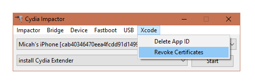
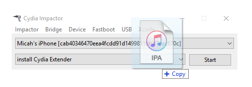

Tutorials
Table of Contents:
Jailbreak
This applies to:
- Electra: 11.0-11.1.2, 64-bit
- LiberiOS: 11.0-11.1.2, 64-bit [DEVELOPERS ONLY]
- Meridian: 10.x, 64-bit [DEVELOPERS ONLY]
- H3lix: 10.x, 32-bit
- G0blin: 10.3.x, 64-bit
- Yalu102: 10-10.2, 64-bit (Excluding iP7)
- Extra_recipe+YaluX: 10-10.1.1, 64-bit (Exclusively iP7)
- Saïgon: 10.2.1, 64-bit
- Phœnix: 9.3.5, 32-bit
- PanGu9: 9.2-9.3.3, 64-bit
- HomeDepot: 9.1-9.3.4, 32-bit
All jailbreaks on this page are Semi-Untethered. This means that after a reboot, your device will not be jailbroken. You must re-enter a jailbroken state from the app used to jailbreak. The app will expire seven days after installation. You must repeat the steps 1-4 to re-sign the app.
Requirements:
- Cydia Impactor
- .ipa for the desired Jailbreak (linked above)
- Computer running Linux, MacOS, or Windows
Instructions:
- Connect you iOS device to your computer. Make sure to trust your computer.
- Launch Cydia Impactor, open a file explorer (Nautilus, Finder, Windows Explorer) to the directory where the Jailbreak .ipa is saved.
- In Cydia Impactor, click the XCODE drop-down menu, and select "Revoke Certificates". Enter your Apple ID credentials when prompted. 
- Drag and drop the jailbreak .ipa into the Cydia Impactor windows. Enter your Apple ID credentials when prompted. 
- On your iOS device, navigate to "Settings>General>Profiles". Click on your email, and trust the certificate as prompted.
- Launch the app, and follow the on-screen instructions. Generally, this only includes pressing the "Jailbreak" button.
Congratulations! You've now jailbroken your device!
Downgrading your iDevice
Downgrading is a key part of Jailbreaking.
It allows you to go to one iOS version to another, regardless of wether or not Apple is signing that version. This can be used, for example, to go from iOS 10.2 to iOS 11.1.2, when 11.1.2 is no longer signed.
64-bit devices
Requirements:
64-bit devices are very protected in comparison to 32-bit devices. The most major way is within the SEP. This handles some security processes on the device, most notably touchID. It runs its own OS, which is also signed by Apple. sepOS must be compatible with iOS for a successful restore process.
- SHSH Blobs
- Signed SEP
- Device Capable of setting nonce (This can be done with NonceSet or V0rtexNonce)
- IPSW for target iOS version
- Machine running Mac OS or Windows
Let's get started:
- Download the latest FutureRestore from Encounter's GitHub
- Put the .IPSW and .SHSH in the same folder as the FutureRestore executable
- Set your Nonce (currently, a nonce can only be set for iOS 11.1.2 and lower)
- placeholder